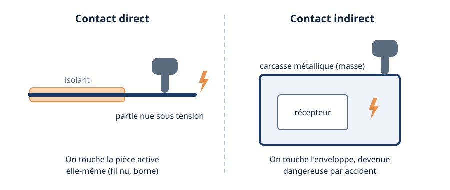
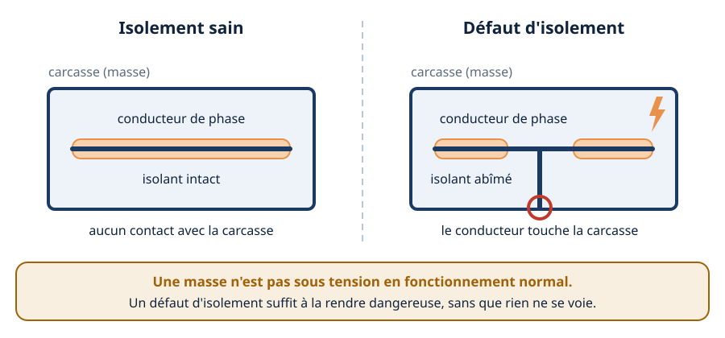
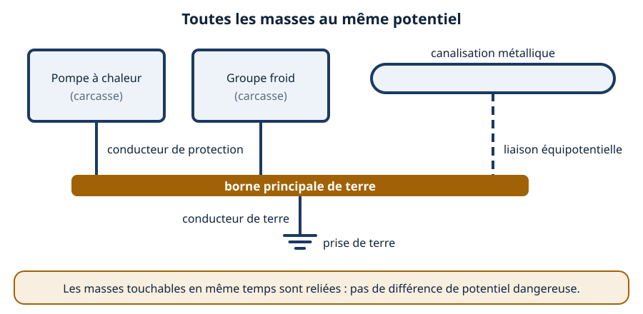
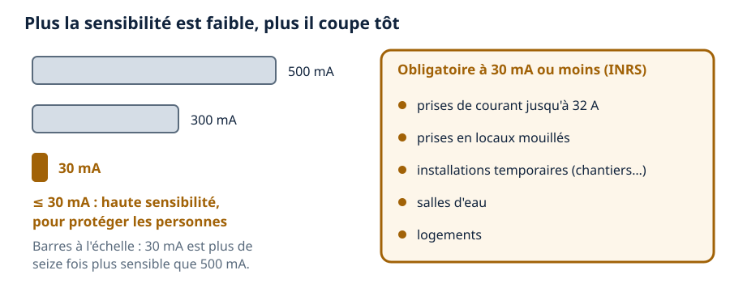
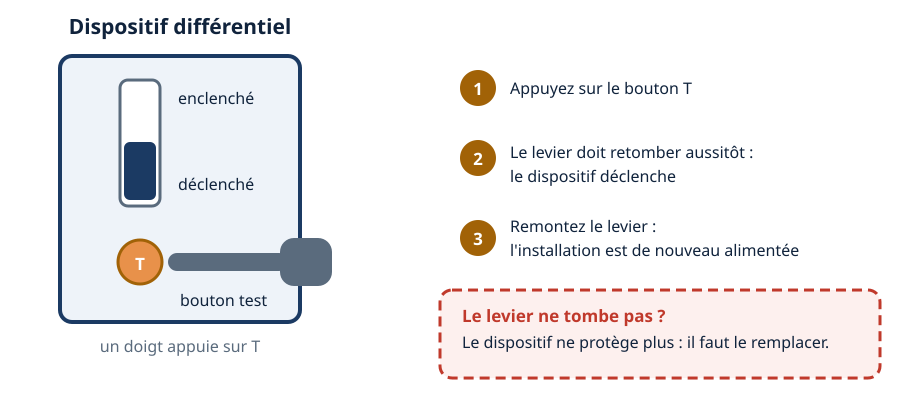
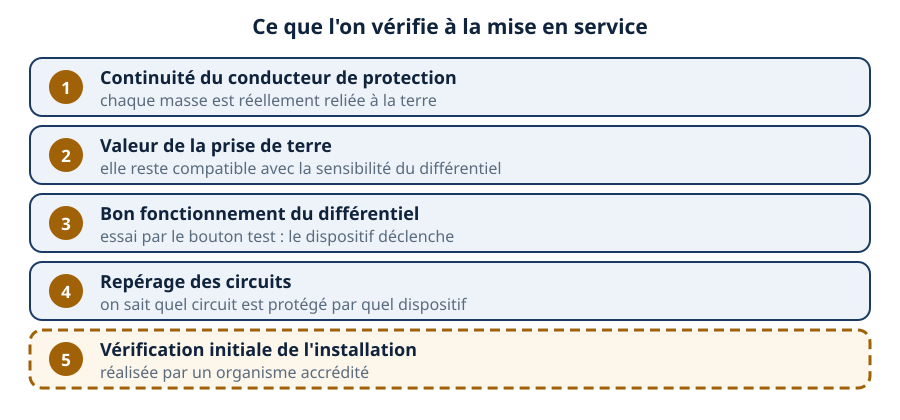

Mini-station commentée · 8 écrans et 4 questions · environ 10 minutes
Objectif
À la fin de la station, vous savez distinguer contact direct et contact indirect, expliquer ce que devient une carcasse d'appareil après un défaut d'isolement, suivre le chemin du courant de défaut jusqu'à la terre, dire ce que compare un dispositif différentiel, situer la sensibilité de 30 mA, et lister ce que l'on vérifie à la mise en service.
Référentiel : TP TECVC, REAC TP-00133 — CP9 (installation de climatisation) et CP6 (chauffage / eau chaude sanitaire) : le technicien d'études qui prescrit une pompe à chaleur ou un groupe froid prescrit aussi son alimentation et la protection des personnes qui la touchent.
Chaque écran peut être expliqué à voix haute : le bouton « Écouter » commente ce que vous voyez. Rien n'est dit qui ne soit aussi écrit.
1 / 12
Écran 1 sur 8
Deux façons d'être touché : direct et indirect
Un contact direct, c'est le contact d'une partie du corps avec une pièce nue sous tension : une borne, un conducteur dénudé. Un contact indirect, c'est le contact avec une pièce conductrice mise accidentellement sous tension : par exemple une armoire métallique dont l'équipement intérieur présente un défaut d'isolement (INRS, page « Risques liés à l'électricité »).
Le Code du travail impose au maître d'ouvrage de concevoir les installations de façon qu'aucune partie active dangereuse ne soit accessible, et qu'en cas de défaut d'isolement aucune masse ne présente une différence de potentiel dangereuse pour les travailleurs (article R4215-3).

À gauche on touche la pièce active ; à droite, une enveloppe devenue dangereuse par accident.
Écran 2 sur 8
Le défaut d'isolement : la carcasse devient dangereuse
La masse d'un appareil est la partie conductrice que l'on peut toucher, qui n'est pas normalement sous tension mais peut le devenir lorsque l'isolation principale est défaillante — la carcasse d'un moteur, la tôle d'une pompe à chaleur (PAC) ou d'un groupe froid (INRS, ED 6345).
Une carcasse peut se retrouver sous tension après un échauffement important ou des contraintes mécaniques ayant abîmé l'isolation. Le piège : rien ne se voit. L'appareil continue souvent de fonctionner, et la première personne qui touche la carcasse est celle qui subit le défaut.

Le cercle rouge marque le point de défaut : l'éclair, la carcasse sous tension.
Écran 3 sur 8
Le chemin du courant de défaut : une boucle par la terre
Un courant de défaut n'existe que s'il peut revenir à la source. Le chemin va du conducteur de phase à la carcasse, puis du conducteur de protection à la prise de terre, traverse le sol et retrouve la source. Le schéma ci-dessous est celui d'un neutre relié à la terre (régime TT) ; les autres régimes bouclent autrement — voir la station Régimes de neutre.
Conséquence pratique : pas de conducteur de protection, pas de boucle. Le décret n° 88-1056 le pose ainsi : toute masse protégée par coupure automatique de l'alimentation doit être reliée à un conducteur de protection (art. 31).

Trait plein : les conducteurs. Trait tireté : le courant qui traverse le sol.
Écran 4 sur 8
Le conducteur de protection et la prise de terre
Deux règles du décret n° 88-1056 : les masses simultanément accessibles doivent être reliées à la même prise de terre (art. 31), et, en régime TT, les masses protégées par un même dispositif sont interconnectées et reliées par un conducteur de protection à une même prise de terre (art. 33).
L'INRS ajoute les éléments conducteurs étrangers à l'installation (canalisations, rails, bâtis métalliques) : ils sont reliés à la prise de terre par un conducteur d'équipotentialité. La prise de terre doit avoir une résistance telle que le potentiel atteint par la masse en cas de défaut ne puisse être maintenu à une valeur dangereuse.

Toutes les masses touchables ensemble, reliées au même point : plus de différence dangereuse entre elles.
Écran 5 sur 8
Le différentiel compare l'aller et le retour
Un dispositif différentiel résiduel (DDR) « fait la somme » des courants des conducteurs actifs : si elle n'est pas nulle, il compare l'écart à sa sensibilité et coupe (OPPBTP, fiche « Les dispositifs différentiels résiduels »). Il est placé à l'origine de l'installation ou des départs principaux et divisionnaires, en amont des appareils d'utilisation (INRS, ED 6345).
Vocabulaire : un appareil qui ne fait qu'ouvrir le circuit est un interrupteur différentiel ; s'il assure aussi la protection contre les surintensités, c'est un disjoncteur différentiel (INRS).

Même épaisseur de trait : rien à couper. Retour plus fin : le dispositif ouvre ses contacts.
Écran 6 sur 8
La sensibilité : 30 mA pour protéger les personnes
Le seuil de déclenchement d'un DDR dépend de sa sensibilité : le courant de défaut à la terre pour lequel il coupe. Les valeurs courantes citées par l'INRS sont 500 mA, 300 mA et 30 mA. La haute sensibilité est celle de 30 mA ou moins.
Elle est obligatoire pour : les prises de courant jusqu'à 32 A (courant assigné) ; les prises en locaux mouillés, quel que soit le courant ; les installations temporaires (chantiers, foires, expositions) ; les salles d'eau ; les logements. Elle est recommandée quand des appareils à câble souple sont utilisés dans des conditions sévères (INRS, ED 6345, §4.3.2).
La prise de terre reste liée à la sensibilité : l'INRS rappelle que le produit de sa résistance par la sensibilité du dispositif ne doit pas dépasser 50 V, la tension limite pour une personne en courant alternatif.
prise de terre × sensibilité ≤ 50 V

La barre de 30 mA est la plus courte : elle représente un courant de déclenchement plus faible, pas un temps plus court.
Écran 7 sur 8
Le bouton test : on constate, on ne présume pas
Le bouton test simule un défaut : le dispositif doit déclencher. L'OPPBTP recommande de vérifier périodiquement les dispositifs différentiels en actionnant ce bouton ; la fréquence n'est pas fixée dans cette fiche.
Le piège
Après un appui sur T, « rien ne se passe » ne veut pas dire « tout va bien ». Si le levier ne tombe pas, c'est le dispositif lui-même qui est en cause : on ne conclut pas à une installation saine, on considère que la protection est perdue et on le remplace.

Le doigt appuie sur T ; le levier doit retomber. S'il ne tombe pas, la protection est perdue.
Écran 8 sur 8
À la mise en service : ce que l'on vérifie
L'INRS liste ce que portent les vérifications : les dispositions vis-à-vis des contacts directs et indirects et leur efficacité, en particulier le bon fonctionnement des dispositifs sensibles aux courants différentiels résiduels, la continuité des conducteurs de protection, la valeur des prises de terre ; et l'identification des différentes parties de l'installation.
La vérification initiale (mise en service, ou après une modification de structure) doit être réalisée par un organisme accrédité. Le rôle du technicien : livrer une installation qu'il a lui-même contrôlée sur ces points.
Contact direct ou indirect : deux risques, deux familles de mesures.
Défaut d'isolement : la carcasse devient une masse sous tension, sans signe visible.
Le courant de défaut boucle par le conducteur de protection et la terre.
Le différentiel compare l'aller et le retour ; 30 mA ou moins pour les personnes.
Le réflexe : appuyer sur T, et constater que le levier tombe.

La dernière ligne, en pointillé, n'est pas la vôtre : elle est confiée à un organisme accrédité.
Question 1 sur 4
Il touche la carcasse d'une PAC dont un conducteur touche la tôle : quel contact ?
Rappel de l'écran 1 — direct ou indirect.
Question 2 sur 4
Le conducteur de protection est sectionné, puis un défaut touche la carcasse. Et alors ?
Rappel de l'écran 3 — la boucle par la terre.
Question 3 sur 4
Que compare un dispositif différentiel ?
Rappel de l'écran 5 — aller et retour.
Question 4 sur 4
Vous appuyez sur T : le levier ne bouge pas. Que concluez-vous ?
Rappel de l'écran 7 — le bouton test.
Les correspondances de la station
NF C 15-100 (même sous-ligne)
— la norme des installations basse tension, où la protection différentielle est détaillée.
Régimes de neutre (même sous-ligne)
— TT, TN, IT : la boucle du courant de défaut n'y est pas la même.
Consigner (même sous-ligne)
— mettre hors tension avant d'intervenir : l'autre moyen de protéger la personne.
Les EPI (Risques professionnels)
— quand la protection collective ne suffit pas, le geste protégé.
ÉlectroRézo (réseau voisin)
— la terre, le disjoncteur différentiel et l'interrupteur différentiel, côté technique.